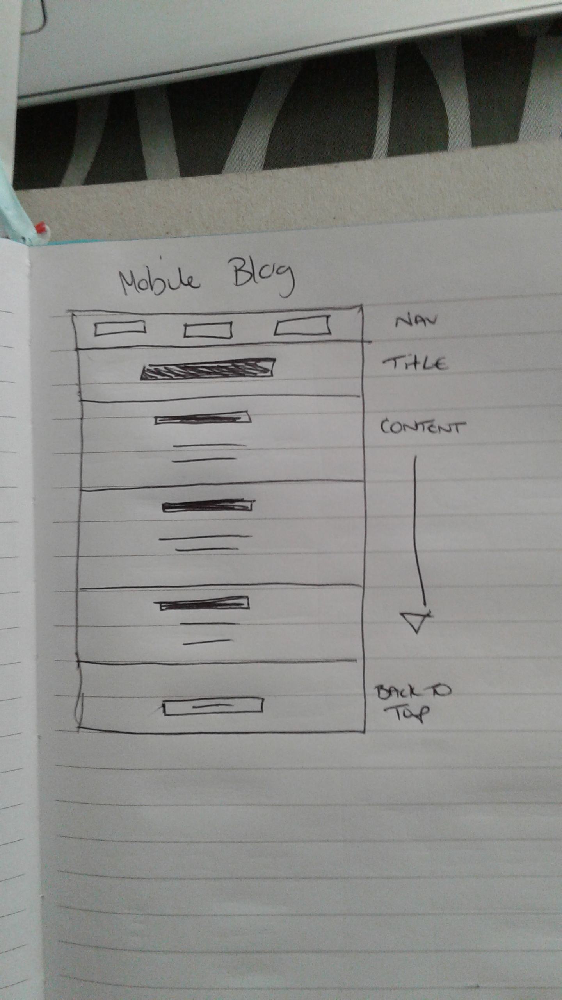
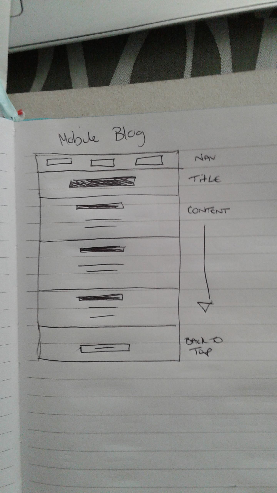

Technical Blog: Design to Web
What is a responsive site and why is it important?
A responsive site is one that adapts to the screen its being shown on. Since screen sizes and resolutions are different if you are looking at a website on say a desktop computer to a mobile phone, it's important for websites to be able to be shown the same on both. It's important because these days, we use our phones a lot to view the net and it would suck if all the websites didn't work right on them.
What is mobile first design and why is it important?
Mobile first design acknowledges that it is harder to design for a smaller screen, you have less space and people have to use their thumbs to navigate etc so getting all the things you want on your website can be a challenge. Therefore, it makes more sense to start at the most difficult and move up to bigger screens because then you can add more elements rather than having to try and take them away or make them work on the smaller screen.
What is a frame work? Is it good or bad?
A framework is almost like a cheat sheet for something. Bootstrap, for example, is a framework for CSS
(The design part of your webpage) that creates grids for you so that you can position things on the page
without having to do so manually.
 

It's good for beginners (like me!) because it helps to create great layouts when you don't always know
what you are doing, and can be great for web developers to build something faster than they would be able to
do it otherwise.


The downsides are that people don't always then learn how to do it themselves and some of these
systems don't get maintained past a certain point and therefore might not be reliable down the line when the tech
develops.
What did I find difficult about implementing my wireframes and why?
I found it difficult to implement my wireframes because as I sat there and drew what I thought I wanted, it all
changed. I came up with multiple layout choices and then when I started thinking about functionality for the user,
I realised that some of what I wanted wouldn't be the most practical and my ideas changed.
Also, some of what I want to do I am not sure of how to yet. I have to be very aware of the concept this sprint
to ignore perfectionism and to simply do what I can, make it responsive and understand that the things I am learning are
the most important, not getting everything exactly how I want it to look at the moment.
Back to top